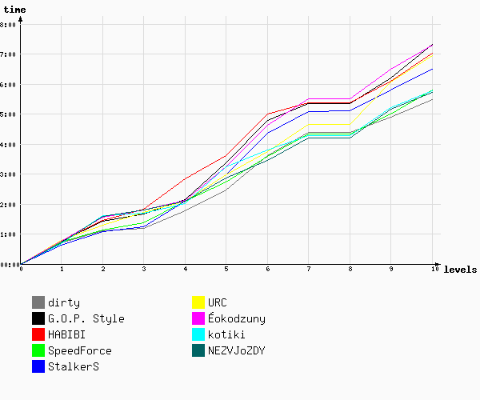
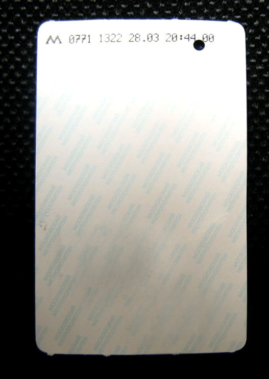
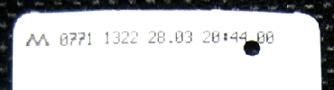
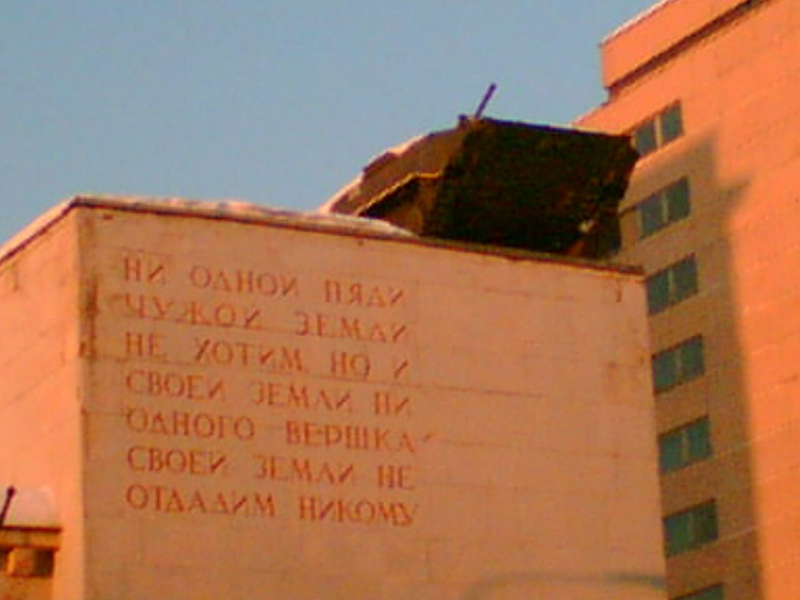

Игра №26
Тип игры: Закрытая
Описание:
Принадлежности:
| Место | Команда | Уровней пройдено | Время уровней | Всего | |
|---|---|---|---|---|---|
| Активного | Штрафы | ||||
| 1 | dirty | 10 | 06:04:39 | -36 | 05:28:39 |
| 2 | НЕЗВЁЗДЫ | 10 | 06:30:05 | -47 | 05:43:05 |
| 3 | котики | 10 | 06:29:29 | -43 | 05:46:29 |
| 4 | SpeedForce | 10 | 06:28:34 | -40 | 05:48:34 |
| 5 | StalkerS | 10 | 06:29:13 | 0 | 06:29:13 |
| 6 | URC | 10 | 07:16:41 | -20 | 06:56:41 |
| 7 | HABIBI | 10 | 07:05:07 | 0 | 07:05:07 |
| 8 | Йокодзуны | 10 | 07:18:02 | 0 | 07:18:02 |
| 9 | G.O.P. Style | 10 | 07:19:30 | 0 | 07:19:30 |

| 1 | 2 | 3 | 4 | 5 | 6 | 7 | 8 | 9 | 10 | ||
| 1 | StalkerS 20:38:18 | StalkerS 21:05:18 | dirty 21:11:32 | dirty 21:47:01 | dirty 22:27:49 | НЕЗВЁЗДЫ 23:27:12 | НЕЗВЁЗДЫ 00:11:53 | SpeedForce 00:59:12 шт. -40 мин. | dirty 01:29:48 | dirty 02:04:39 | 1 |
| 2 | котики 20:40:12 | dirty 21:06:24 | StalkerS 21:14:14 | котики 22:01:03 | SpeedForce 22:43:43 | SpeedForce 23:35:19 | котики 00:16:17 | URC 00:59:13 шт. -20 мин. | SpeedForce 01:40:27 | SpeedForce 02:28:34 | 2 |
| 3 | dirty 20:42:49 | SpeedForce 21:07:18 | SpeedForce 21:22:01 | SpeedForce 22:04:44 | НЕЗВЁЗДЫ 22:52:19 | dirty 23:36:21 | SpeedForce 00:19:18 | НЕЗВЁЗДЫ 00:59:16 шт. -47 мин. | StalkerS 01:48:34 | StalkerS 02:29:13 | 3 |
| 4 | SpeedForce 20:43:11 | URC 21:17:49 | G.O.P. Style 21:39:56 | URC 22:04:58 | StalkerS 22:57:57 | URC 23:45:13 | dirty 00:23:39 | dirty 00:59:19 шт. -36 мин. | котики 01:55:23 | котики 02:29:29 | 4 |
| 5 | НЕЗВЁЗДЫ 20:43:12 | G.O.P. Style 21:25:04 | котики 21:41:39 | StalkerS 22:05:19 | URC 22:59:04 | котики 23:47:53 | URC 00:39:07 | котики 00:59:29 шт. -43 мин. | НЕЗВЁЗДЫ 01:57:18 | НЕЗВЁЗДЫ 02:30:05 | 5 |
| 6 | Йокодзуны 20:45:44 | HABIBI 21:30:38 | URC 21:43:49 | НЕЗВЁЗДЫ 22:05:26 | котики 23:13:54 | StalkerS 00:21:53 | StalkerS 01:05:17 | StalkerS 01:05:45 | HABIBI 02:08:09 | HABIBI 03:05:07 | 6 |
| 7 | G.O.P. Style 20:45:44 | Йокодзуны 21:33:38 | Йокодзуны 21:47:33 | Йокодзуны 22:07:30 | Йокодзуны 23:13:55 | Йокодзуны 00:38:03 | G.O.P. Style 01:20:59 | G.O.P. Style 01:21:10 | G.O.P. Style 02:12:25 | URC 03:16:41 | 7 |
| 8 | URC 20:46:39 | НЕЗВЁЗДЫ 21:34:30 | НЕЗВЁЗДЫ 21:47:34 | G.O.P. Style 22:09:15 | G.O.P. Style 23:22:29 | G.O.P. Style 00:47:41 | HABIBI 01:25:31 | HABIBI 01:25:41 | URC 02:23:16 | Йокодзуны 03:18:02 | 8 |
| 9 | HABIBI 20:48:41 | котики 21:36:42 | HABIBI 21:52:46 | HABIBI 22:52:55 | HABIBI 23:39:41 | HABIBI 01:03:11 | Йокодзуны 01:29:40 | Йокодзуны 01:29:59 | Йокодзуны 02:29:40 | G.O.P. Style 03:19:30 | 9 |
| 1 | 2 | 3 | 4 | 5 | 6 | 7 | 8 | 9 | 10 |
Уровень 1.
| № | Команда | Старт | Завершение | Штраф | Продолжительность | Бонусы |
|---|---|---|---|---|---|---|
| 1 | StalkerS | 20:00:04 | 20:38:18 | 38:14 | ||
| 2 | котики | 19:59:56 | 20:40:12 | 40:16 | ||
| 3 | dirty | 20:00:04 | 20:42:49 | 42:45 | ||
| 4 | НЕЗВЁЗДЫ | 20:00:02 | 20:43:12 | 43:10 | ||
| 5 | SpeedForce | 19:59:56 | 20:43:11 | 43:15 | ||
| 6 | Йокодзуны | 20:00:03 | 20:45:44 | 45:41 | ||
| 7 | G.O.P. Style | 20:00:02 | 20:45:44 | 45:42 | ||
| 8 | HABIBI | 20:02:54 | 20:48:41 | 45:47 | ||
| 9 | URC | 20:00:03 | 20:46:39 | 46:36 |
Задание Полевое :
Самолет умчался дальше, исторгнув еще несколько парашютистов, но где-то дальше у самого горизонта, и стало очень тихо ...
Тем временем земля медленно надвигалась. Под ногами проплывало светящееся поле, и приближалось зарево главных красных звезд. Вспомнились слова инструктора о том, что приземляться на каменный лес города не очень хорошо – вроде даже опасно. Страха не было – сверху город казался цветной декоративной клумбой со снующими жуками: одни мчались с бешено яркими белыми глазами, другие от них убегали, показывая пронзительно красные задницы. Была только досада – все приземляются как люди, и только у меня все как обычно. Неожиданно земля резко рванула мне навстречу, а город обнажился жилистыми ветками уличных фонарей со множеством балконосучьев. Землёй, как оказалось, там и не пахло. Выдирающий остатки здоровья из прокуренных легких смог, скрывал под собой мускулистые квадратики мостовой.
Сука-парашют, вместо того, чтобы смягчить мое падение, цепляясь за балконы и верхушки фонарных столбов, сложился использованной контрацепцией и со свистом летел следом.
Тишина … Праздные люди вокруг … Видимо это не Дмитров …
Итак, сооружаем из имеющихся вещей парашют и ищем агента в Камергерском переулке. Агент отдаст ключ в ответ на следующую душещипательную историю:
Вы - парашютист, должны были приземлиться в Дмитрове. В самолете Вы уснули. Друзья-гады, сказали, что Вы уже над Дмитровом. Ну, Вы и прыгнули. Теперь Вам нужны деньги, чтобы добраться до места.
Внимание агента нужно удержать не менее 15 секунд.
В игре будут бонус уровни. О них вы можете прочитать здесь

Уровень 2.
| № | Команда | Старт | Завершение | Штраф | Продолжительность | Бонусы |
|---|---|---|---|---|---|---|
| 1 | dirty | 20:42:49 | 21:06:24 | 23:35 | ||
| 2 | SpeedForce | 20:43:11 | 21:07:18 | 24:07 | ||
| 3 | StalkerS | 20:38:18 | 21:05:18 | 27:00 | ||
| 4 | URC | 20:46:39 | 21:17:49 | 31:10 | ||
| 5 | G.O.P. Style | 20:45:44 | 21:25:04 | 39:20 | ||
| 6 | HABIBI | 20:48:41 | 21:30:38 | 41:57 | ||
| 7 | Йокодзуны | 20:45:44 | 21:33:38 | 47:54 | ||
| 8 | НЕЗВЁЗДЫ | 20:43:12 | 21:34:30 | 51:18 | ||
| 9 | котики | 20:40:12 | 21:36:42 | 56:30 |
Задание Полевое :
Мдя … ну уж коли Москва, не вижу преград, чтобы осмотреть самое красивое в мире метро. Войдя в вестибюль я увидел окошко в стене. В очереди было три человека. Мне сильно не понравилось, что они стоят в очереди раньше, хотя я там вообще не стоял. Тогда я достал из кармана канистру с 92-м бензином и облил обидчиков. Те ни черта не поняли, а я, воспользовавшись замешательством оппонентов, поджёг их. Когда огонь угас, заглянул в палатку. «Дайте мне чего-нибудь от гусениц и вообще где пазырить на сХватчиков», — сказал я. Продавец молчал. Вглядевшись в его физиономию, я осознал, что это была ярко синяя курица, о возбуждении которой свидетельствовал набухший красный гребешок. В ответ наседка-кассир робко протянула билетик в подземное царство голубых вагонов.
На кольцевой станции московского метро, вы найдёте человека, с явными атрибутами "схватчика" (ноутбук, КПК, мобильник). Код вы найдете над его головой.


Формат ключа СХ + "то, что над головой схватчика"
- Нет, ну это хамство. Молодой человек, отодвиньтесь от меня.
- Девушка, ну что вы, успокойтесь. Это не то, что вы думаете. Я сегодня получку получил, это деньги свернутые у меня в кармане. Проехали еще несколько станций. Вдруг девушка говорит:
- Молодой человек, только не говорите мне, что на Киевской вам прибавили зарплату
Задание Координаторское :
В московском метрополитене есть фраза: "<...>лыжи, детские велосипеды, ... , рыболовные удочки<...>" Найти пропущенное слово.
БОНУС УРОВЕНЬ 1
Установите Mail.Ru Agent, версия – с поддержкой игр Для получения задания свяжитесь по аське со следующим контактом 113326030 или по телефону 8 903 55 00 423 в период с 22:00 до 22:30.
Бонус в ответ на выигранное сражение в морской бой
БОНУС УРОВЕНЬ 2
Привезите до 24:00 ВСЕ карточки команд по адресу Тверская, 6, приехав позвоните по тел. 8 903 55 00 423
Уровень 3.
| № | Команда | Старт | Завершение | Штраф | Продолжительность | Бонусы |
|---|---|---|---|---|---|---|
| 1 | котики | 21:36:42 | 21:41:39 | 04:57 | ||
| 2 | dirty | 21:06:24 | 21:11:32 | 05:08 | ||
| 3 | StalkerS | 21:05:18 | 21:14:14 | 08:56 | ||
| 4 | НЕЗВЁЗДЫ | 21:34:30 | 21:47:34 | 13:04 | ||
| 5 | Йокодзуны | 21:33:38 | 21:47:33 | 13:55 | ||
| 6 | SpeedForce | 21:07:18 | 21:22:01 | 14:43 | ||
| 7 | G.O.P. Style | 21:25:04 | 21:39:56 | 14:52 | ||
| 8 | HABIBI | 21:30:38 | 21:52:46 | 22:08 | ||
| 9 | URC | 21:17:49 | 21:43:49 | 26:00 |
Задание Полевое :
Конвульсирующая толпа в такт разгона-торможения вагонов, с головой была погружена в массмедийное культур-мультур чтиво желтой прессы. Заголовки истошно орали:
«сумасшедший машинист во время движения поезда пел арии.»
«учёные доказали, что пахнут не бомжи, а их вши»
«завхоз мыл окна мясом двоечника»
Крупными не растворившимися гранулами в этой толпе смотрелись немногочисленные исполнители с книгами. Книга - именно книга была тем самым спасательным кругом в толпе горожан, театрально соитирующих описанные в прессе происшествия. Кто придумал такую книгу? Кто этот писака? Стараясь не повторять ошибок, пытаюсь выяснить, что же за автор-дурак и в каком «кудрявом» месте указывал на это.
Автору присудили «дурацкую» книжную премию в 2004 г. Ищите в его книге о приключениях Шурика (в твердом переплете на стр. 94-97, а в мягком - на стр. 137-140) несуществующее ныне название улицы, упомянутое в книге между двумя соитиями.
Формат кода СХ + название улицы
Уровень 4.
| № | Команда | Старт | Завершение | Штраф | Продолжительность | Бонусы |
|---|---|---|---|---|---|---|
| 1 | НЕЗВЁЗДЫ | 21:47:34 | 22:05:26 | 17:52 | ||
| 2 | котики | 21:41:39 | 22:01:03 | 19:24 | ||
| 3 | Йокодзуны | 21:47:33 | 22:07:30 | 19:57 | ||
| 4 | URC | 21:43:49 | 22:04:58 | 21:09 | ||
| 5 | G.O.P. Style | 21:39:56 | 22:09:15 | 29:19 | ||
| 6 | dirty | 21:11:32 | 21:47:01 | 35:29 | ||
| 7 | SpeedForce | 21:22:01 | 22:04:44 | 42:43 | ||
| 8 | StalkerS | 21:14:14 | 22:05:19 | 51:05 | ||
| 9 | HABIBI | 21:52:46 | 22:52:55 | 60:09 |
Задание Полевое :
Крошки желания выйти наверх набухали, превращаясь в семена, выпускали тонкие стебли, сахарный тростник прорезал корнями позвоночник. Пронзал спину. Раскидывал листья. В грудной клетке. Пока….. Не взорвался. Чертовым! Фейерверком!! Попкорна!!!
Отменить метро, вычеркнуть из календаря осточертевшую зиму, прокатиться по садовому кольцу в душном троллейбусе!
Глядя на грустно волочащийся за мной парашют, кто-то в троллейбусе ляпнул - сезонное обострение шизофрении, но только я знаю правду - у меня апатия … я устал.
Сиплый голос пробежал дребезжащим эхом по обивке салона, разбудив меня сообщением: «Приехали, конечная, Смоленский бульвар»
Сколько же я проехал, куда увез меня этот сохатый? Ответ был под гранитным камнем, три остановки назад.
Уровень 5.
| № | Команда | Старт | Завершение | Штраф | Продолжительность | Бонусы |
|---|---|---|---|---|---|---|
| 1 | SpeedForce | 22:04:44 | 22:43:43 | 38:59 | ||
| 2 | dirty | 21:47:01 | 22:27:49 | 40:48 | ||
| 3 | HABIBI | 22:52:55 | 23:39:41 | 46:46 | ||
| 4 | НЕЗВЁЗДЫ | 22:05:26 | 22:52:19 | 46:53 | ||
| 5 | StalkerS | 22:05:19 | 22:57:57 | 52:38 | ||
| 6 | URC | 22:04:58 | 22:59:04 | 54:06 | ||
| 7 | Йокодзуны | 22:07:30 | 23:13:55 | 66:25 | ||
| 8 | котики | 22:01:03 | 23:13:54 | 72:51 | ||
| 9 | G.O.P. Style | 22:09:15 | 23:22:29 | 73:14 |
Задание Полевое :
На этой улице есть здание, построенное по проекту архитектора А.Е.Вебера. Сейчас это обычное заведение ввстретит вас густыми ароматами экзотических стран, бородатые девушки угостят вашу фантазию иллюзорными размышлениями о шелковистости их лиц. Ссохшиеся, пропитые старикашки прогуливают своих плюгавеньких с пятнами под рыжими хвостами, антикошек. Постоянно заставляя их сменить вектор гравитации на противоположный. Особо стеснительные юноши, стараясь не попасться на глаза окружающим, забиваются под потолок прячась в темных углах. Бывалые знают о привычках стеснительных, поэтому дают им занять все углы по периметру. Как только они усядутся, бывалые достают из карманов пучки пойманных на улице светлячков и начинают ими бросаться в молодых, заставляя их истошно прыгать с люстры на люстру в поисках спасительных черных дыр.
А покурить – пожалуйте на крыльцо. Брутально взобравшись друг на друга от крыльца вниз лежат спинками вверх твердые ступени. Ступень матка, держит на себе весь этот бедлам и мечтает дотянуться до «тачки» чтобы навсегда снять с себя этот груз. Шансы, равно как укусить себя за надпочечник.
Возле здания припаркован автомобиль - первое слово в название марки автомобиля - первая часть ключа.
Вторую часть ключа вам отдаст агент, который находится на той же улице, где и автомобиль. Вам необходимо, держа 3 литровую банку в руках, идти по улице и предлагать курящим людям выкинуть сигарету в банку тем самым спасти воздушную среду от дыма.
Формат кода СХ + марка + вторая часть кода.
Уровень 6.
| № | Команда | Старт | Завершение | Штраф | Продолжительность | Бонусы |
|---|---|---|---|---|---|---|
| 1 | котики | 23:13:54 | 23:47:53 | 33:59 | ||
| 2 | НЕЗВЁЗДЫ | 22:52:19 | 23:27:12 | 34:53 | ||
| 3 | URC | 22:59:04 | 23:45:13 | 46:09 | ||
| 4 | SpeedForce | 22:43:43 | 23:35:19 | 51:36 | ||
| 5 | dirty | 22:27:49 | 23:36:21 | 68:32 | ||
| 6 | HABIBI | 23:39:41 | 01:03:11 | 83:30 | ||
| 7 | StalkerS | 22:57:57 | 00:21:53 | 83:56 | ||
| 8 | Йокодзуны | 23:13:55 | 00:38:03 | 84:08 | ||
| 9 | G.O.P. Style | 23:22:29 | 00:47:41 | 85:12 |
Задание Полевое :
Сухая жажда выбраться на улицу проросла: минутным буйным цветом, бурным стероидным ростом вылилась в формирование нежных силуэтов остреньких пупырышков. Я приехал на смотровую с радиоприемником. А как настроить приёмник??? И тут я понял, что если возьму всё что имею и отброшу ненужное, то три заветные цифры как раз укажут мне искомую частоту. Для начала я взял свою наибольшую любовь, добавил к этому давно позабытую юность и понял, как она хороша. Добавил немного дождя, который принёс с собой прилив энергии. Мне пришлось дважды оставить куранты и один больший маяк.
«Хм ... что-то не так...» порылся в карманах и обнаружил восемь и восемь
«Вот Дурак я! Зачем же мне нужны эти восемь и восемь??? Пожалуй, выброшу!»
Ура получилось! Я встал у середины парапета, настроил приёмник и начал слушать, удаляясь от смотровой по азимуту 235. Пройдя примерно 130 шагов, я остановился и начал прочёсывать местность влево и вправо.
Формат ответа СХ + 1ключ (частота вещания только цифры) + 2ключ.
Хождение по азимуту: http://klub-afrika.narod.ru/turmin_all/techtur/orient.htm
Уровень 7.
| № | Команда | Старт | Завершение | Штраф | Продолжительность | Бонусы |
|---|---|---|---|---|---|---|
| 1 | HABIBI | 01:03:11 | 01:25:31 | 22:20 | ||
| 2 | котики | 23:47:53 | 00:16:17 | 28:24 | ||
| 3 | G.O.P. Style | 00:47:41 | 01:20:59 | 33:18 | ||
| 4 | StalkerS | 00:21:53 | 01:05:17 | 43:24 | ||
| 5 | SpeedForce | 23:35:19 | 00:19:18 | 43:59 | ||
| 6 | НЕЗВЁЗДЫ | 23:27:12 | 00:11:53 | 44:41 | ||
| 7 | dirty | 23:36:21 | 00:23:39 | 47:18 | ||
| 8 | Йокодзуны | 00:38:03 | 01:29:40 | 51:37 | ||
| 9 | URC | 23:45:13 | 00:39:07 | 53:54 |
Задание Полевое :
Иная жажда настигла меня – жажда общения, ведь встречая другого, я общаюсь не с ним, а со своим представлением о нём, не замечая этого, и, вместо узнавания, погружаю чуждость другого в уют собственной неуязвимости. Вот он – мой друг. Он ждет меня в «Пирогах» на Дмитровке, я еду туда на классике российского производства с тонированными стеклами (ВАЗ 6-ка,5-ка, копейка) с бомбилой-кавказцем за рулем. Этот бомбила, перед входом в «Пироги», должен закричать: «Я привез схватчика, он в багажнике». Схватчик при этом действительно должен быть в багажнике. (Во избежание проблем с ГИБДД схватчика в багажник сажайте непосредственно возле «Пирогов»). Как подъедете, позвоните по номеру 8-916-740-45-61.
На этом уровне подсказок не будет
Задание Координаторское :
Определите современное название улицы:
43 603 870 992 1225 1286 1366 1472 1850 2014 2123 2161 2317 2454 2565
Флотские будни. Очки Семеныча.
У старого боцмана Семеныча были очки. С виду обычные очки, напоминающие некий симбиоз защитных очков сталевара и очков первых воздухоплавателей. Но зато они были сделаны лично Семенычем. Он выстрадал их долгими вечерами, находясь в далекой Средиземке. К слову сказать, очки были одновременно защитными и врачебно-диоптрическими. В них можно было, не боясь получить увечье, разливать чугун и одновременно рассматривать картинки в стимулирующих мужское воображение журналах, входить в пораженную ипритом зону и просто спать в тихий час.
Так вот, был у Семеныча на пароходе дружок закадычный, тогда еще третий механик, Денисыч. И пакостили они друг дружке по любому поводу. Хотя, на их взгляд, это были вовсе не пакости, а всего лишь соленый морской юмор. К примеру, боцман натягивал тонкий шкерт над самой палубой, поперек дверного проема двери Денисыча и тут же приглашал механика к себе на чаек...
Подслеповатый Денисыч шел, задевал шкерт домашними шлепанцами, падал, бился головой о переборку, теряя вставную челюсть и контактные линзы. По мнению Семеныча, это было весело.
Денисыч затаил обиду. Месть его была чудовищной. Тихой сапой, под самое утро, Денисыч прокрался в каюту к спящему сном младенца боцману, взял со столика его гиперзащитные очки, аккуратнейшим образом оклеил все линзы в них калькой светло-молочного цвета, затем положил очки обратно на столик, поджег целлулоидную расческу Семеныча, цинично погасил ее о портянки боцмана и стал со злорадством наблюдать, как небольшие клубы зловонного дыма наполняют пространство каюты. Немного повременив, для усиления эффекта Денисыч закурил папиросы "Беломорканал" и, наконец, решив, что уже пора, он громко крикнул в ухо боцмана "Пожар"... и ловко отскочил в сторону. Семеныч мигом стартанул в подволок и, еще в полете схватив со столица тонированные калькой очки, нацепил их себе на глаза. А в глазах был сплошной туман. Однако за сорок лет работы на торговом флоте все движения по аварийной тревоге у старика были отработаны до автоматизма... То есть, экипировавшись в очки, Семеныч потянул носом воздух и, убедившись в задымленности помещения, лихо впрыгнул в сапоги, натянул спасжилет и каску, выскочил в коридор и, ощупывая переборки руками, метнулся к шкафчикам с изолирующими аппаратами КИП-8, безошибочно выбрал свой и, включившись в него, поскакал в столовую команды с криком "Аварийная партия - на выход!". Денисыч следовал за ним, стараясь не умереть со смеху.
И вот картина... Завтракающий экипаж и Семеныч. Но всей красе: очки под калькой, сверху маски КИПа, под КИПом спасжилет, ниже спасжилета фиолетовые семейные трусы и - финальный штрих - сапоги с торчащими из них портянками в цветочек. Десять чайных ложечек одновременно упали в десять чайных кружек... Наступила звенящая тишина. Обстановку разрядил 3-й штурман, который тихо и меланхолично предложил Семенычу дабы окончательно войти в образ, одеть буденовку, повесить пластмассовый автомат на шею, оседлать деревянного коника... И скакать, скакать, скакать...
Уровень 8.
| № | Команда | Старт | Завершение | Штраф | Продолжительность | Бонусы |
|---|---|---|---|---|---|---|
| 1 | dirty | 00:23:39 | 00:59:19 | шт. -36 | 00:0-20 | |
| 2 | SpeedForce | 00:19:18 | 00:59:12 | шт. -40 | 00:0-6 | |
| 3 | URC | 00:39:07 | 00:59:13 | шт. -20 | 00:06 | |
| 4 | HABIBI | 01:25:31 | 01:25:41 | 00:10 | ||
| 5 | G.O.P. Style | 01:20:59 | 01:21:10 | 00:11 | ||
| 6 | котики | 00:16:17 | 00:59:29 | шт. -43 | 00:12 | |
| 7 | Йокодзуны | 01:29:40 | 01:29:59 | 00:19 | ||
| 8 | НЕЗВЁЗДЫ | 00:11:53 | 00:59:16 | шт. -47 | 00:23 | |
| 9 | StalkerS | 01:05:17 | 01:05:45 | 00:28 |
Задание Полевое :
УРОВЕНЬ СНЯТ, КЛЮЧ
схкнат86ндь5дп
С наступлением сумерек, каменные цветки осмотрительно выбираются в центральные парки мегаполиса. Поймать его не просто. Здесь нужен творческий подход. Нужно знать все их повадки и привычки. Ну, пастбища конечно всякие, водопои там, нерестилища. Для приманки цветка лучше всего использовать оперение больничной утки. В принципе, можно и взрослого горбатого водолаза с пришитым плавником, но на него плохо ловится. Или какой-нибудь сложный зеленый прибор, например БМП на крыше.
Завидев БМП цветок вскинет к небу свои лепесточки и замрет истуканом. Тут самое время хватать его за мягкости и трогать за трогости.
Найти его можно там, где босоногий косматый бородач из тульской губернии, томно восседает в сквере на хлипком креслище, закрывая каменной спиной лесонасаждения. Вдали на улице ухмыляется главный гинеколог с фамилией про краснопузых воробьёв.
Пароль ищите в месте на каменном цветке.
УРОВЕНЬ СНЯТ, КЛЮЧ
схкнат86ндь5дп

Уровень 9.
| № | Команда | Старт | Завершение | Штраф | Продолжительность | Бонусы |
|---|---|---|---|---|---|---|
| 1 | dirty | 00:59:19 | 01:29:48 | 30:29 | ||
| 2 | SpeedForce | 00:59:12 | 01:40:27 | 41:15 | ||
| 3 | HABIBI | 01:25:41 | 02:08:09 | 42:28 | ||
| 4 | StalkerS | 01:05:45 | 01:48:34 | 42:49 | ||
| 5 | G.O.P. Style | 01:21:10 | 02:12:25 | 51:15 | ||
| 6 | котики | 00:59:29 | 01:55:23 | 55:54 | ||
| 7 | НЕЗВЁЗДЫ | 00:59:16 | 01:57:18 | 58:02 | ||
| 8 | Йокодзуны | 01:29:59 | 02:29:40 | 59:41 | ||
| 9 | URC | 00:59:13 | 02:23:16 | 84:03 |
Задание Полевое :
В голове крутилась песня «Бабло победит зло, Ба-ба-бабло победит зло, уа-ааааааааааааааааааааааа». Так и случилось с названием деревни, именем которой назван бульвар. Сначала название этой деревни означало – «безденежный», а потом – «зажиточный».
На бульваре 5 девиц в расписных сарафанах водят хоровод. Сосчитайте количество целых желтых и зеленых горошков на сарафанах. Первая часть ключа – разность большего и меньшего значения, вторую вы найдете на замке.
Формат ответа: CX + первая часть + вторая часть кода
Задание Координаторское :
Кто это?
Смотрите картинку ниже:

Уровень 10.
| № | Команда | Старт | Завершение | Штраф | Продолжительность | Бонусы |
|---|---|---|---|---|---|---|
| 1 | НЕЗВЁЗДЫ | 01:57:18 | 02:30:05 | 32:47 | ||
| 2 | котики | 01:55:23 | 02:29:29 | 34:06 | ||
| 3 | dirty | 01:29:48 | 02:04:39 | 34:51 | ||
| 4 | StalkerS | 01:48:34 | 02:29:13 | 40:39 | ||
| 5 | SpeedForce | 01:40:27 | 02:28:34 | 48:07 | ||
| 6 | Йокодзуны | 02:29:40 | 03:18:02 | 48:22 | ||
| 7 | URC | 02:23:16 | 03:16:41 | 53:25 | ||
| 8 | HABIBI | 02:08:09 | 03:05:07 | 56:58 | ||
| 9 | G.O.P. Style | 02:12:25 | 03:19:30 | 67:05 |
Задание Полевое :
Ну вот я и в психушке, что стало логическим завершением моей прогулки. Досчитался горошки, идиот… Кругом математики, сошедшие с ума. Вдруг забегает псих из соседней палаты, начинает бегать и орать: «Я сейчас всех вас продифференцирую!». Все в панике орут и бегают от него. Сижу спокойно. Псих подбегает ко мне: «Я тебя продифференцирую!» Спокойно отвечаю: «Да мне пох...». Псих: «Я тебя 2 раза продифференцирую!», - «Да мне пох, говорю же...». Псих: «Я тебя несколько раз продифференцирую!!!» «Да я же говорю, мне пох, я e в степени n»... На приеме Главврач мне сказал, что отпустит, если я смогу сказать, куда я шел все это время. Мне требуется разгадать название улицы и номер дома. Для этого мне потребуется решить 3 математические задачки. В названии улицы присутствует четырехзначное число. Решение первой задачи - первая часть числа, решение второй задачи – вторая часть числа, решение третьей задачи – номер дома.
1. Борян и Вован в понедельник насильничали свою одноклассницу Леночку. За свое обещание молчать, девочка взяла с мерзавцев по 50 баксов. На следующий день Леночка сама дала другому однокласснику Петечке, всего за семнадцать баксов. В тот же день, Леночка поспорила на 40 баксов со Светкой, что та переспит с физруком. Светка, к Леночкиному несчастью, с физруком переспала. В среду Леночка позволила себя потрогать под трусиками первоклашке и взяла с него за это 5 баксов, за этим занятием их застукала Валька, от которой Леночке пришлось откупиться двадцатью пятью баксами. Сколько же в среднем в день заработала Леночка?
2. 2-а класс побывал в кабинете зубного врача, и ему вырвали 24 молочных зуба. После этого в кабинете зубного врача побывал 2-б класс, и ему вырвали на 6 молочных зубов больше. Последним к зубному врачу в кабинет пошли ученики 2–в класса и им вырвали на 3 зуба меньше, чем 2-б классу. Сколько молочных зубов оставили все 3 класса в кабинете зубного врача, если известно, что один второклассник свой вырванный зуб унес домой, чтобы показать дедушке?
3. 23 бабушки поехали кататься на мотоциклах. Впереди на мотоцикле без глушителя ехала в одиночестве самая шустрая бабушка, а за ней мчались два мотоцикла с колясками, на каждом из которых поместилось по три бабушки, а сзади их догоняли остальные мотоциклы. На оставшихся мотоциклах сидело аж по восемь бабушек-экстрималок. Сколько всего мотоциклов было у бабушек?